游戏内装备图鉴
一套完整配装由三层组成：强化剂（Amp）是角色永久成长，技能装置（Rig）是带入试验的装备技能，处方（Prescription）是永久解锁的被动/主动技能。强化剂与技能装置按 核心 / 新手 / 老玩家 推荐分类，处方则按 等级一 / 二 / 三 分阶并给出首选建议；所有图标均为游戏内真实图标，开局前先挑好方向。
📝 本页由社区共同维护 · 效果以游戏当前版本（第七赛季「坟场计划」）为准，发现错误？点此提交修改 (Pull Request)
📖 标注说明：⭐核心 / 🟢新手推荐 / 🔵老玩家推荐 是强化剂与技能装置的社区推荐维度；处方按 等级一 / 二 / 三 的「首选」列出；👍 / 红框 是《复生方案》里社区公认的选择。三者口径不同，别混为一谈。
处方 · PRESCRIPTION
门厅前台护士处购买的永久技能解锁（绿色 Voucher），分 等级一 / 等级二 / 等级三 三阶，前一阶全购后开放下一阶。下方仅列出社区公认的首选项，次要项可随版本与个人玩法自行补点。图标均为游戏内真实图标。
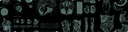
等级一 · TIER 1滑行
SLIDE
移动中按蹲下可滑铲，快速脱离与走位更顺手。
再生
REGENERATION
脱战后短暂延迟自动回少量血，容错更高。
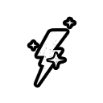
即时使用
INSTANT USE
对准物品按住左键直接使用，而非收入背包，省一步操作。
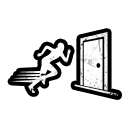
跑步撞门
RUN & SMASH
奔跑中可直接撞开门，锁门会被砸裂，节奏更快。
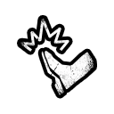
踹击救援
HARD KICK
可踹开抓你朋友的敌人、阻止其处决队友，组队神技。
阻止处决
STAY OF EXECUTION
在队友将被处决时踹击打断，配合踹击救援双重保人。
自卫术
SELF DEFENSE
被扑倒时用瓶 / 砖快速挣脱，反制小怪扑击。
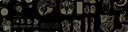
等级二 · TIER 2扩充背包
EXPANDED INVENTORY
背包格 +1，总栏位达 4，携带空间更宽裕。
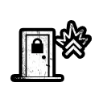
重击手
DOOR BASHER
锁门仅需 2 击砸开，配合「爆破大师」效率拉满。
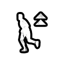
速度爆发
SPEED BOOST
提升奔跑速度，跑图与脱离更高效。
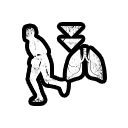
耐力
ENDURANCE
降低奔跑耐力消耗，长线机动更持久。
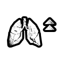
运动员
ATHLETE
提升最大耐力上限。
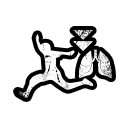
跑酷
GYMNAST
降低跳跃与攀爬的耐力消耗。
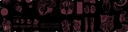
等级三 · TIER 3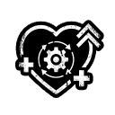
进阶再生
ADVANCED REGEN
生命再生触发更快，持续作战回血更及时。
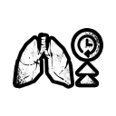
耐力恢复
STAMINA RECOVERY
加速耐力恢复，跑动更持久。
深呼吸
DEEP BREATHS
加速疲惫（Exhaustion）恢复，连续行动后更快回神。
重生
REVITALIZE
单人试验中注射器与复活均回满生命。
抗伏击
ANTI-AMBUSH
向藏身的敌人投掷物可将其逼出，破解伏击点位。
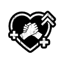
医疗兵
MEDIC
扶起与复活队友的速度更快，团队容错再升级。
抗性
RESISTANCE
更快挣脱陷阱与被擒抱，应对控制型敌人更从容。
处方是永久解锁、一次购买长期生效。贴吧老玩家共识：优先把处方与技能装置收益吃满，再回头补强化剂——先把常用动作（滑行、再生、踹击救援、跑步撞门）点满，再补等级二 / 三的效率项。次要项（如冲刺不耗耐、电池延长、重训）可视打法自行补齐。
技能装置 · RIG
带入试验的装备技能，在门厅左侧车间购买与升级（绿色 Voucher）。每局带一个；第七赛季起支持「套装预设」存档多套。下列图标均为游戏内真实图标，徽章含义同强化剂。
核心新手推荐
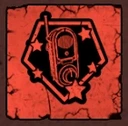
眩晕 Stun
STUN RIG
投掷式电击装置，短暂麻痹 / 眩晕敌人；可升级扩大范围、延长眩晕、触电为队友回能等。被追时脱身好用。
老玩家推荐
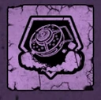
致盲 Blind
BLIND RIG
地雷式烟雾装置，敌人触发后释放致盲烟雾并减速；可升级范围、延长、触发后获得肾上腺素加速。
核心新手推荐
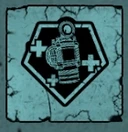
治疗 Heal
HEAL RIG
释放治疗气体，为自己与附近队友回血；可升级静音、延长、解毒、减速敌人。团队保命核心。
新手推荐老玩家推荐
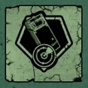
透视 X-Ray
X-RAY RIG
透视墙壁看见敌人与物件并可标记；可升级让队友共享情报、显示物资 / 机密、回充夜视电量。
老玩家推荐
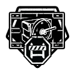
路障 Barricade
BARRICADE RIG
部署可移动掩体 / 路障，封锁通道或制造临时防线，控场与保护点位利器。
老玩家推荐
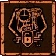
干扰器 Jammer
JAMMER RIG
无线干扰装置，瘫痪敌方摄像头 / 门禁等设备；入侵与潜行流好搭档。
标注 核心 / 推荐 的为社区高频选择，不代表唯一答案；技能装置的具体升级与数值随版本（第七赛季「坟场计划」及后续补丁）调整，以游戏内为准。图标取自官方游戏资源。
强化剂 · AMP
角色永久成长，10 级解锁、用绿色 Voucher 向二楼 Dorris 购买；按 技能 / 药物 / 工具 三类。徽章：⭐核心 · 🟢新手推荐 · 🔵老玩家推荐
新手推荐
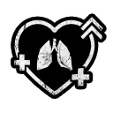
隐藏并呼吸
HIDE & BREATHE
躲藏在掩体中时持续恢复耐力。
新手推荐老玩家推荐
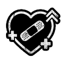
隐藏并治疗
HIDE & HEAL
躲藏时缓慢恢复生命值。
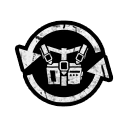
隐藏并恢复
HIDE & RESTORE
躲藏时同时恢复生命与耐力。
老玩家推荐
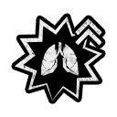
快速逃脱
QUICK ESCAPE
挣脱敌人抓取的速度更快。
老玩家推荐
隐形
INVISIBLE
蹲下潜行时显著降低被察觉概率。
老玩家推荐
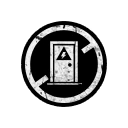
破门陷阱
DOOR TRAP BREAKER
可拆除门上的陷阱装置。
核心新手推荐
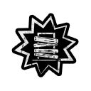
爆破大师
SMASH
一击破坏门板与木板，可独自砸开合作门。
老玩家推荐
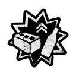
强力手臂
STRONG ARM
更快撬门 / 撬锁，并可举起更重物品。
老玩家推荐
躲避身法
EVASIVE MANEUVER
被敌人追击时移动速度提升。
新手推荐老玩家推荐
双倍剂量
DOUBLE DOSES
使用药品时恢复量翻倍；注射器可救队友两次。
老玩家推荐
抗毒剂
ANTITOXIN
免疫毒气伤害并更快清除中毒。
富余
SURPLUS
可额外多携带一份药品。
核心新手推荐
最后机会
LAST CHANCE
本应致命的最后一击仅将生命降为 1 点（约 5 分钟冷却）。
隐匿
INCOGNITO
缩短被敌人标记发现的持续时间。
新手推荐
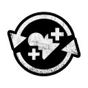
好评
GOOD JOB
完成任务获得更多经验值。
核心新手推荐
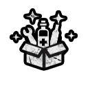
强化效应
BOOSTED
开局随机获得一个道具（药品 / 解毒剂 / 瓶子 / 砖块）。
核心新手推荐
自我复活
SELF REVIVE
倒地后自动复活一次。
老玩家推荐
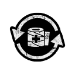
包扎专家
BANDAGE EXPERT
包扎伤口的速度更快。
新手推荐老玩家推荐
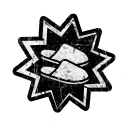
悄无声息
SLIPPERS
奔跑时产生的噪音大幅降低。
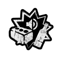
刺耳噪音
CACOPHONY
制造响亮噪声，可转移 / 误导敌人注意。
核心新手推荐老玩家推荐
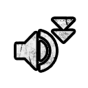
降噪
NOISE REDUCTION
降低奔跑与开门等行动噪音，更易潜行。
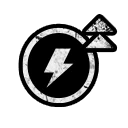
电池充电
BATTERY CHARGER
更快为手机等电子设备充电。
老玩家推荐
破锁器
LOCK BREAKER
撬锁速度大幅提升。
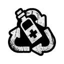
回收
RECYCLE
可反复取回并重新使用消耗品（如砖块、瓶子）。
核心新手推荐
开锁神器
KEY MASTER
开锁及开启上锁容器必定一次成功。
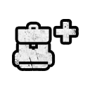
背包
BACKPACK
可额外携带一个道具。
老玩家推荐
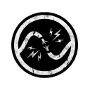
短路
SHORT CIRCUIT
更快使电子门禁、摄像头等设备失效。
推荐怎么选：新手 vs 老玩家
综合官方 Wiki、Dot Esports 攻略与百度贴吧老玩家经验整理。先看懂「该优先什么」，再回上面三块图鉴里挑具体项。
🟢 新手推荐去选什么
目标：能活、能跑图、容错高，先把基础节奏摸熟。
- 强化剂降噪 / 悄无声息 / 开锁神器 / 爆破大师：潜行与破门保底，开局不再卡手。
- 强化剂强化效应 / 最后机会 / 自我复活：开局随机道具 + 两次保命底牌，降低翻车率。
- 技能装置透视 X-Ray / 治疗 Heal / 眩晕 Stun：看清敌人、能救队友、能控场，门槛最低。
- 技能装置致盲 Blind / 干扰器 Jammer：制造混乱、瘫痪设备，单人开荒更稳。
- 处方 · 等级一滑行 / 再生 / 即时使用 / 跑步撞门 / 踹击救援 / 自卫术：先把常用动作解锁，操作手感立刻不一样。
- 处方 · 等级二重击手 / 扩充背包 / 速度爆发 / 耐力：跑图与突破效率拉满。
🔵 老玩家推荐去选什么
目标：在稳的基础上抠效率、控场与高难挑战。
- 强化剂隐形 / 隐藏并治疗 / 破门陷阱 / 躲避身法 / 短路：高难潜行与速通的关键拼图。
- 强化剂抗毒剂 / 包扎专家 / 双倍剂量 / 回收 / 强力手臂：续航、解毒与资源循环拉满。
- 技能装置致盲 Blind / 路障 Barricade / 干扰器 Jammer：制造混乱、封锁通道、瘫痪设备，高难控场利器。
- 处方 · 等级二运动员 / 跑酷 / 重击手 / 速度爆发 / 耐力：跑图、搬运与突破效率最大化。
- 处方 · 等级三进阶再生 / 耐力恢复 / 深呼吸 / 医疗兵 / 抗性 / 抗伏击：持续作战与团队容错再升级。
- 思路贴吧共识：优先把处方与技能装置收益吃满，强化剂等级到了再按玩法自由点，别一上来铺满九宫格。
社区推荐组合
源自「复生方案」与贴吧讨论，按玩法取向选一套（强化剂 + 技能装置 + 处方 叠加才是完整配装）
通用核心 · 红框
- 降噪 + 爆破大师 + 强化效应（强化剂）＋ 治疗 / 眩晕（装置）＋ 滑行 / 再生 / 跑步撞门（处方）：覆盖破门、续航、保命与控场，复发前全员首推。
高难保命 · 紫框
- 降噪 → 最后机会 + 自我复活（强化剂）＋ 致盲 Blind（装置）＋ 踹击救援 / 自卫术（处方）：最高难度 / 无伤挑战的保命底牌。
入侵模式 · 蓝框
- 降噪 → 短路（强化剂）＋ 致盲 / 干扰器 Jammer（装置）＋ 速度爆发 / 耐力（处方）：常玩 Invasion 比纯降噪更适配，快速控摄像头与门禁、周旋脱身。
三层装备（强化剂 / 技能装置 / 处方）与「套装预设」共同决定你的玩法。标注仅供参考，具体数值、解锁等级与机制随第七赛季「坟场计划」及后续补丁变动，以游戏内与实战为准。欢迎在下方评论区补充你的配装。
💬 社区讨论区
有更好的配装思路？在下方评论分享（基于 GitHub Discussions，需登录 GitHub）